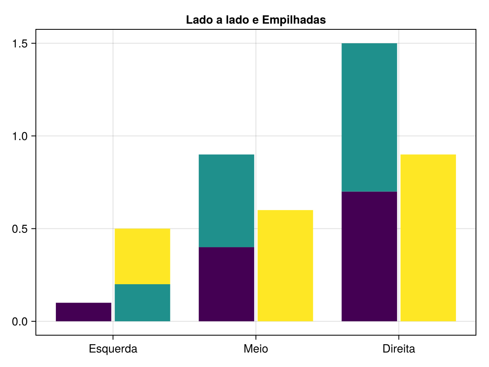
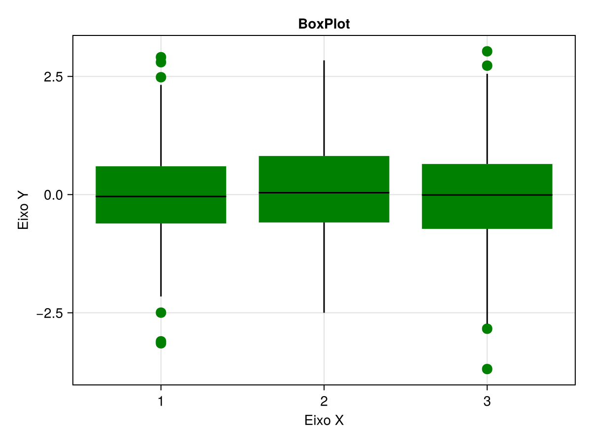
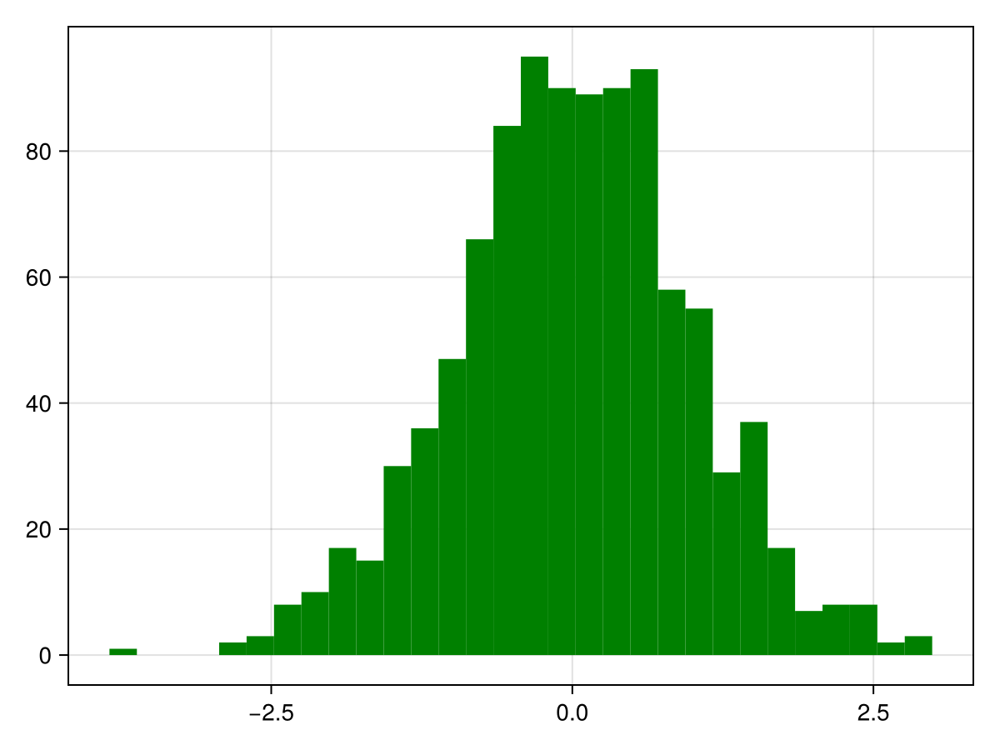

using Pkg
Pkg.add("Makie")
Pkg.add("CairoMakie")
Pkg.add("GLMakie")Como construir gráficos com o Pacote Makie.jl
Gráficos
Pacotes
O Makie.jl é um pacote para gráficos em Julia que se destaca pela sua flexibilidade e grande variedade de funcionalidades. Neste tutorial, ensinaremos como utilizar o pacote na construção de visualizações básicas (Scatterplot, Histograma) até técnicas avançadas (Heatmaps, Gráficos de Contorno e Linhas \(3D\)).
Esther Cleveston ![]()
Introdução
O Makie.jl é um pacote para gráficos em Julia que se destaca pela sua flexibilidade e grande variedade de funcionalidades. Com ele, é possível criar desde visualizações simples, como gráficos de barras, histogramas, boxplots e gráficos de linhas, até gráficos mais sofisticados, como visualizações em \(3D\) e animações. O pacote oferece diferentes backends, como o CairoMakie e o GLMakie, que permitem gerar tanto gráficos estáticos quanto dinâmicos (interativos).
Neste tutorial, vamos mostrar alguns exemplos para entender como o Makie funciona. Começaremos com a exploração de visualizações básicas, como histogramas e gráficos de dispersão, e também apresentaremos exemplos para gráficos mais complexos, incluindo gráfico de linhas em \(3D\).
Instalar os pacotes
Para instalar e carregar os pacotes que serão utilizados, execute as seguintes linhas de código:
using Makie
using CairoMakie
using GLMakieGráfico de Dispersão
Para iniciar, vamos construir um scatterplot (Gráfico de Dispersão) com o código abaixo. Neste caso, utilizamos valores sequenciais de \(1\) até \(10\) para o eixo X e geramos aleatoriamente \(10\) números entre \(0\) e \(1\) para o eixo Y.
x = 1:10;
y = rand(10);
scatter(x, y,
color = :green,
markersize = 15,
label = "Dados Aleatórios",
axis = (
title = "Gráfico de Dispersão",
xlabel = "Eixo X",
ylabel = "Eixo Y"))
Caso queira salvar o gráfico, a função save pode ser utilizada a partir da seguinte sintaxe:
fig = scatter(x, y,
color = :green,
markersize = 15,
label = "Dados Aleatórios",
axis = (
title = "Gráfico de Dispersão",
xlabel = "Eixo X",
ylabel = "Eixo Y"))
save("figura_01.png", fig)Gráfico de Barras
Nesta seção, vamos explorar a criação de gráficos de barras no Makie.jl, abordando os tipos mais comuns: barras simples lado a lado, empilhadas (stacked) e empilhadas lado a lado (dodged).
Para o primeiro exemplo, utilizaremos o código abaixo para criar um gráfico de barras simples lado a lado. Vamos criar uma tabela com as seguintes categorias:
- Gato: Variável categórica de \(1\) a \(3\).
- Altura: Gerada sequencialmente de \(0.1\) até \(0.9\), com incremento de \(0.1\).
- Grupo: Variável categórica de \(1\) a \(3\).
tabela = (gato = [1, 1, 1, 2, 2, 2, 3, 3, 3],
altura = 0.1:0.1:0.9,
grupo = [1, 2, 3, 1, 2, 3, 1, 2, 3])(gato = [1, 1, 1, 2, 2, 2, 3, 3, 3], altura = 0.1:0.1:0.9, grupo = [1, 2, 3, 1, 2, 3, 1, 2, 3])barplot(tabela.gato, tabela.altura,
dodge = tabela.grupo,
color = tabela.grupo,
axis = (xticks = (1:3, ["Esquerda", "Meio", "Direita"]),
title = "Barras Lado a Lado"))
Para fazermos o gráfico de barras empilhadas, utilizaremos a mesma tabela feita anteriormente e mudaremos o argumento de dodge para stack na função.
barplot(tabela.gato, tabela.altura,
stack = tabela.grupo,
color = tabela.grupo,
axis = (xticks = (1:3, ["Esquerda", "Meio", "Direita"]),
title = "Barras Empilhadas"))
Por fim, faremos uma combinação dos dois últimos gráficos, resultando no gráfico de barras empilhadas lado a lado. Esta visualização é ideal para comparar subtotais em diferentes categorias principais.
Para isso, vamos adicionar duas categorias extras à tabela, tipo1 e tipo2, as quais serão utilizadas nos argumentos dodge e stack, respectivamente. O primeiro tipo definirá as barras que ficarão lado a lado, e o segundo, as que ficarão empilhadas dentro de cada grupo lateral.
tabela = (gato = [1, 1, 1, 2, 2, 2, 3, 3, 3],
altura = 0.1:0.1:0.9,
grupo = [1, 2, 3, 1, 2, 3, 1, 2, 3],
tipo1 = [1, 2, 2, 1, 1, 2, 1, 1, 2],
tipo2 = [1, 1, 2, 1, 2, 1, 1, 2, 1])(gato = [1, 1, 1, 2, 2, 2, 3, 3, 3], altura = 0.1:0.1:0.9, grupo = [1, 2, 3, 1, 2, 3, 1, 2, 3], tipo1 = [1, 2, 2, 1, 1, 2, 1, 1, 2], tipo2 = [1, 1, 2, 1, 2, 1, 1, 2, 1])barplot(tabela.gato, tabela.altura,
dodge = tabela.tipo1,
stack = tabela.tipo2,
color = tabela.grupo,
axis = (xticks = (1:3, ["Esquerda", "Meio", "Direita"]),
title = "Lado a lado e Empilhadas"))
Gráfico BoxPlot
Para a construção de um boxplot, uma ferramenta fundamental para visualizar a distribuição e a dispersão dos dados, utilizaremos o código abaixo. Serão gerados \(1000\) valores aleatórios (discretos) entre \(1\) e \(3\) para compor o eixo X, e \(1000\) valores aleatórios de uma distribuição Normal padrão (\(\mu=0, \sigma=1\)) para o eixo Y.
x = rand(1:3, 1000);
y = randn(1000);
boxplot(x, y,
color = :green,
markersize = 15,
label = "Dados Aleatórios",
axis = (
title = "BoxPlot",
xlabel = "Eixo X",
ylabel = "Eixo Y"))
Gráfico de Densidade
Para a construção de um gráfico de densidade, vamos gerar uma curva de densidade de \(300\) valores aleatórios de uma Normal padrão e atribuir à variável densidade.
Em seguida, utilizaremos o operador ! para adicionar a segunda curva a este mesmo gráfico existente. A segunda curva também terá \(300\) valores aleatórios, mas será deslocada (somando \(3\)) para a direita. O argumento alpha será usado para definir a transparência da curva, permitindo que ambas sejam visualizadas claramente, mesmo quando se sobrepõem.
density(randn(300))
density!(randn(300) .+ 3, alpha = 0.8)Plot{Makie.density, Tuple{Vector{Float64}}}
Gráfico Histograma
Para visualizar a distribuição de frequência de um conjunto de dados, o histograma é a ferramenta ideal. Podemos fazer um histograma com o código abaixo. Como exemplo, geraremos \(1000\) amostras aleatórias de uma Normal padrão. Em seguida, especificamos que a faixa de valores deve ser dividida em 30 colunas (bins).
dados = randn(1000);
hist(dados, bins = 30, color = :green)
Gráfico de Linhas
O gráfico de linhas pode ser feito com o código abaixo, servindo para visualizar séries de dados. Para o eixo X utilizaremos valores sequenciais de \(1\) até \(10\), e para o eixo Y, uma lista de \(10\) valores aleatórios.
x = 1:10;
y = [2, 4, 3, 6, 7, 8, 7, 9, 10, 12];
lines(x, y,
color = :green,
label = "Dados Aleatórios",
axis = (
title = "Gráfico de Linhas",
xlabel = "Eixo X",
ylabel = "Eixo Y"))
Mais Gráficos
Nesta seção final, vamos explorar visualizações que demonstram a potência do Makie.jl para gráficos complexos, utilizando o GLMakie e o CairoMakie.
Gráfico de Contorno
Para o primeiro exemplo, que visa visualizar dados tridimensionais em um plano \(2D\), será necessário carregar o pacote DelimitedFiles tal qual no código abaixo:
Pkg.add("DelimitedFiles")
using DelimitedFilesEm seguida, usaremos a elevação de um terreno como os dados no nosso exemplo e salvaremos as observações no objeto vulcao. Após, vamos criar o espaço para a figura utilizando as funções Figure() e Axis(). Com a função contourf (que cria contornos preenchidos), delimitaremos o contorno a \(10\) faixas de valores (altitudes), obtendo assim um gráfico de contorno.
vulcao = readdlm(Makie.assetpath("volcano.csv"), ',', Float64);
f = Figure()
Axis(f[1, 1])Axis with 0 plots:contorno = contourf!(vulcao, levels = 10)Plot{Makie.contourf, Tuple{StepRangeLen{Float32, Float64, Float64, Int64}, StepRangeLen{Float32, Float64, Float64, Int64}, Matrix{Float32}}}Colorbar(f[1, 2], contorno)Colorbar()
Heatmap
Para construir um Mapa de Calor (Heatmap), ideal para visualizar a magnitude de dados em uma matriz \(2D\), vamos definir três componentes:
- Os valores do eixo X, de \(1\) a \(5\) (sequencial).
- Os valores do eixo Y, de \(6\) a \(10\) (sequencial).
- A matriz de dados \(5x5\) com valores sequenciais de \(1\) a \(25\), que será utilizada para definir as cores e a intensidade do heatmap.
figura = Figure()
ax = Axis(figura[1, 1])Axis with 0 plots:centro_x = 1:5;
centro_y = 6:10;
dados = reshape(1:25, 5, 5);
heatmap!(ax, centro_x, centro_y, dados)Heatmap{Tuple{Vector{Float64}, Vector{Float64}, Matrix{Float32}}}
Gráfico de Linhas 3D
Por fim, para fazer um gráfico de linhas \(3D\), vamos criar \(100\) pontos aleatórios em um espaço \(3D\) (definindo as coordenadas X, Y, Z) e outros 100 valores aleatórios que definirão as cores. Depois de criar a figura, desenharemos as linhas conectando os pontos. As cores serão definidas pela variável contendo os valores, e o argumento fxaa = true será utilizado para suavizar as linhas, melhorando a qualidade visual.
pontos = rand(Point3f, 100);
valores = rand(100);
figura = Figure(size = (600, 650))
Label(figura[1, 1], "base", tellwidth = false)Label()lines(figura[2, 1], pontos, color = valores, fxaa = true)Makie.AxisPlot(LScene(), Lines{Tuple{Vector{Point{3, Float32}}}})
Conclusão
O pacote Makie.jl, juntamente com seus backends CairoMakie e GLMakie, oferece uma ampla gama de recursos para a criação de gráficos, desde os mais simples até visualizações interativas e \(3D\).
Suas funcionalidades são vastas demais para serem abordadas em um único material. Neste tutorial, exploramos apenas algumas delas, começando por visualizações básicas como gráficos de barras, histogramas e linhas, e avançando para representações mais sofisticadas, incluindo mapas de calor, gráficos de contorno e gráficos de linhas em \(3D\).
Referências
Danisch & Krumbiegel, (2021). Makie.jl: Flexible high-performance data visualization for Julia. Journal of Open Source Software, 6(65), 3349, DOI: 10.21105/joss.03349
Nota
Ferramentas de IA foram utilizadas para correção ortográfica, aprimoramento do texto e criação de imagens.